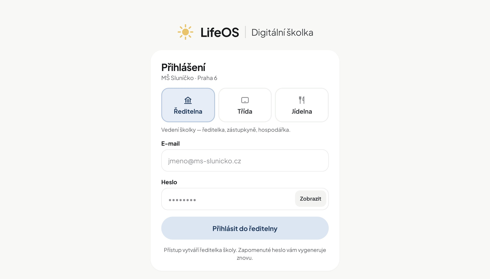

LifeOS
Oliver N. · 38,4 °C ve školce
rodiče to hned vidí v LifeOS
Teploty, léky, zprávy od lékaře a očkování celé rodiny v jednom telefonu. U doktora odpovíte za pět vteřin.
Prohlédnout aplikaci
Docházka, omluvenky, úrazy, jídelna i matrika pro MŠMT. Učitelka zapisuje na tabletu, rodiče to hned vidí v telefonu.
Ukázka pro vaši školku